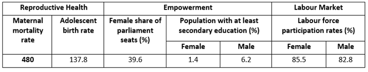

Chapter 9 Cross-cutting issues
9.1 Mainstreaming of climate change adaptation
9.2 Gender issues / LCIP / Vulnerable groups
9.2.1 Gender Issues
The geographic distribution of the population of Mozambique is uneven and most are concentrated in the provinces of Nampula and Zambézia, with almost 40% of the total population. Maputo City, Gaza and Niassa have the lowest rates of the total population, with less than 6% each1 . This population is mostly young as a result of high fertility and mortality, which means that half of the population is under 15 years old. In the UNDP Human Development Index Mozambique is ranked 180th out of a total of 188 and is ranked 135th out of a total of 155 on the UNDP Gender Inequality Index (2015).
Furthermore, in the Gender Inequality Index, where inequality is analysed in three dimensions: a) reproductive health, b) empowerment and c) economic activities, it can be seen that in addition to the high maternal mortality rate and the occurrence of early pregnancies, women are at a greater disadvantage than men, especially in secondary education. The data on economic activities also show that in Mozambique structural inequality affects relations between men and women to a greater extent, since women work more than men and earn less than they produce.
Table 1: Gender Inequality Index

Source: UNDP Human Development Report, 2015, p. 6.
Regarding the Gender Development Index, as the table below shows, with the exception of life expectancy at birth, for all other indicators related to education and control over resources, women are at a clear disadvantage compared to men, with the average years of schooling being half that of men. Gender inequality results in a Human Development Index of 0.39 for women compared to 0.44 for men.
Table 2: Gender Development Index
Source: UNDP Human Development Report 2015
Extreme poverty and the HIV/AIDS epidemic that has a major impact especially on women and girls have contributed to the precarious situation of women and girls in the country (USAID Gender 2013). Although access to social services has increased, gender and geographical inequalities still persist. Northern and central provinces have less access to education, health services, water, sanitation and social protection. These provincial disparities are reinforced by low per-capita budget allocations. Poorer households are also less likely to access services; for example, antenatal care coverage ranges from 58% to almost 100% in the lowest and highest quintile (World Bank 2013). There is a direct correlation between high educational attainment, wealth and greater exposure to the media. The situation is worsened in rural areas, where less than 4% of women know what internet is (Gillwald et al. 2010). Another challenge for the country’s socio-economic development is related to the high illiteracy rate, which for various reasons (especially cultural) affects women (especially in rural areas) more than men (58% and 30% respectively) (IOF 2014-2015). Overall, the data surveyed clearly demonstrate that women in Mozambique are disadvantaged in socio-cultural, political and economic terms. This greatly depends on the current gender relations in the country which are highly patriarchal (WLSA 2013). From this perspective of gender inequality, women are highly susceptible to domestic violence and sexual abuse and both contribute to increased poverty, especially among female-headed households (Tvedten, Paulo & Tuominen, 2009:02).
Studies done in recent years in the country highlight the notion of a “feminisation of poverty.” That is, on the poverty count, 63% of female-headed households versus 52% of male-headed households are poor (CMI 2010). According to the IOF 2014-15, the vast majority of female household heads (76.3%) are peasants, while among men the proportion of peasants is 55.9%. The provinces of Gaza and Inhambane are the ones with high numbers of female heads of households, which is justified by the high level of male migration to neighboring South Africa.
(Source: Mozambique Gender Profile, p. 12-14. Translated from Portuguese)
Gender and Climate Change
In Mozambique, women and girls are among the groups most affected by poverty. The climate change that cyclically ravages the country runs counter to the government’s efforts to eradicate poverty. In this context, climate change has direct impacts on the roles women play in agriculture and food security, in the search for water and firewood for family survival and consequently on the health of family and community members. The impacts of climate change degrade the environment, causing floods and dry land, salinization and contamination of water, soil erosion, destruction of infrastructure, among others. Due to the roles they play in the family, women and girls are forced to travel long distances to find clean water, firewood, etc., taking away time they could dedicate more to their studies and personal development. The delay in the rainy season and the scarcity of rain constrains the woman who has to find alternative means to feed the family, because without rain it is not possible to cultivate the fields. Therefore, the more the weather changes, the greater the workload for women.
(Source: Strategy and Action Plan on Gender, Environment and Climate Change, p. 2-3. Translated from Portuguese)